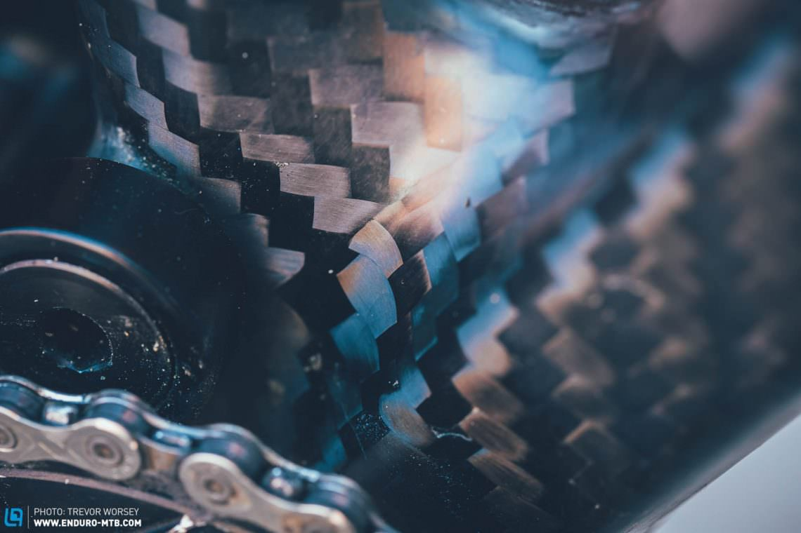

Das erste „echte“ Mountainbike hat Joe Breeze 1977 für Charles Kelly hergestellt.Auch wenn sich Breeze dabei hinsichtlich der Rahmengeometrie stark an den Cruisern orientierte,war es das erste Mountainbike, das nicht ein nachträglich für den Einsatz als Mountainbike umgerüsteter Cruiser war und komplett aus neuen Komponenten aufgebaut war.

Entwicklung zu einer globalen Industrie.In den 1980er Jahren erfuhr das Mountainbiken ein starkes Wachstum.Es fand überall auf der Welt Verbreitung und wurde auch in Europa so populär, dass die Verkaufszahlen der Mountainbikes die aller anderen Fahrradtypen überflügelten. Die Rahmen wurden weiterentwickelt, indem neben den dünnwandigen Stahlrohren alternative Materialien wie Aluminium, Titan und später auch Carbon verwendet wurden.Die Ausstattungskomponenten wurden ebenfalls weiterentwickelt, vor allem von den japanischen Herstellern Shimano und SunTour mit Rasterschaltung, Lenker-Schalthebeln, ovalen Biopace-Kettenblättern und Cantilever-Bremsen.